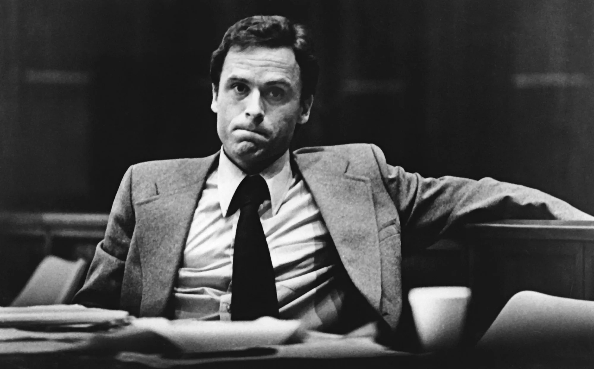

“...like an addiction, you keep craving something harder, which gives you a
greater sense of excitement,
until you reach a point where the
pornography only goes so far.”
Chapman later claimed that he believed Holden Caulfied would have killed John Lennon because he was a “phony”. Before his sentencing, Chapman read a passage from the novel in the courtroom. He thought of himself as the ‘catcher in the rye of his generation’.